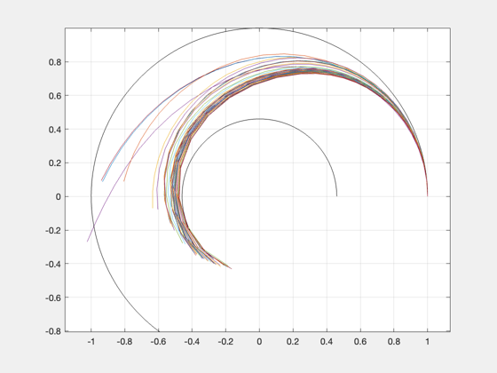
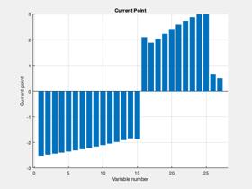
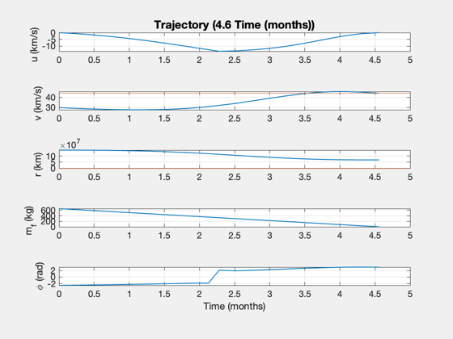
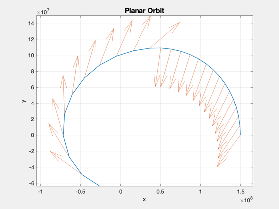
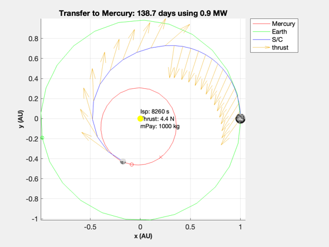

Contents
Mercury planar optimization
------------------------------------------------------------------------ See also: PlanarHelioOptimal, SimulatePlanarHelioTrajectory, StraightLineReport ------------------------------------------------------------------------
%-------------------------------------------------------------------------- % Copyright 2019 Princeton Satellite Systems, Inc. All rights reserved. %-------------------------------------------------------------------------- global PSS_NO_INTERACTIVE_DEMOS
Setup
Mercury: SMA of 0.38 AU, eccentricity of 0.2; orbit from 0.3 to 0.47 AU Period is just 85 days!
au = Constant('au'); year = 365.25*86400; uExhaust = 81; % km/s sigma = 750; % W/kg eta = 0.2; % Total fusion power to thrust payload = 1000; % payload mass (kg) nYears = 0.38; % transit time in years fTank = 0.04; dAU = 0.46; % Mercury orbit radius, average repeatPrevious = false;
Shortest possible trip
d = PlanarHelioOptimal; d.sigma = sigma; % specific power, W/kg d.eta = eta; % thrust efficiency d.uE = uExhaust; % exhaust velocity, km/s d.f = fTank; % fuel structural fraction (tanks) tRet = nYears*year; d.r0 = 1*au; d.rF = dAU*au; d.tF = nYears*year; d.mP = payload; % payload mass (kg) d.scale = [1;1e3;1e3]; % [distance;vel;vel] d.nPts = 25; if repeatPrevious [phi, thrust, t, data] = PlanarHelioOptimal( d, 4000, 'iter-detailed', thrust1, phi1 ); else [phi, thrust, t, data] = PlanarHelioOptimalSlidingTime( d ); end [~,x1,fH] = SimulatePlanarHelioTrajectory( data.mD, data.mF, thrust, d.uE,... d.r0, d.rF, d.mu, phi, t );
5.9265 22.107 28.828 1.0592 1.5632e-13
5.9265 22.107 28.828 1.0592 1.5632e-13
First-order Norm of
Iter F-count f(x) Feasibility optimality step
0 55 3.512660e+03 8.965e+07 3.354e+02
1 110 1.707035e+03 7.251e+07 1.131e+02 1.763e+00
1.6677 11.895 32.281 0.94473 6.0396e-14
2 165 1.698007e+03 7.137e+07 9.635e+01 5.644e-02
1.6464 11.705 32.465 0.9371 -1.1369e-13
3 220 1.698128e+03 5.254e+07 3.985e+01 3.759e+00
1.6466 5.3734 35.007 0.81124 -4.4409e-14
4 275 1.698367e+03 2.669e+07 3.556e+01 2.173e+00
1.6472 1.8045 40.489 0.63839 1.7408e-13
5 330 1.698470e+03 2.225e+07 1.995e+01 1.984e+00
1.6475 -0.075066 40.503 0.60875 -2.4869e-14
6 385 1.698678e+03 1.404e+07 1.082e+01 2.993e+00
1.6479 -2.9035 41.862 0.55384 5.3291e-14
7 443 1.698740e+03 1.396e+07 1.306e+01 3.937e-01
1.6481 -2.8668 41.84 0.5533 -4.2633e-14
8 503 1.698774e+03 1.391e+07 2.313e-02 7.870e-01
1.6482 -2.8124 41.836 0.55296 -1.5632e-13
9 559 1.698842e+03 1.390e+07 2.560e-02 2.132e-01
1.6483 -2.8105 41.829 0.55288 -1.1013e-13
10 621 1.698864e+03 1.386e+07 2.065e-02 1.918e-01
1.6484 -2.8068 41.837 0.55268 -3.908e-14
11 679 1.698970e+03 1.386e+07 2.517e-02 8.360e-02
1.6486 -2.8067 41.836 0.55267 1.7053e-13
12 739 1.699010e+03 1.385e+07 2.011e-02 1.086e-01
1.6487 -2.8027 41.839 0.5526 -1.3856e-13
13 796 1.699177e+03 1.385e+07 2.117e-02 6.453e-02
1.6491 -2.8021 41.838 0.55259 1.7408e-13
14 856 1.699293e+03 1.384e+07 1.929e-02 8.578e-02
1.6494 -2.799 41.84 0.55255 -5.6843e-14
15 912 1.699794e+03 1.384e+07 1.861e-02 6.351e-02
1.6506 -2.7969 41.84 0.55249 -1.4211e-14
16 970 1.701831e+03 1.382e+07 1.634e-02 1.530e-01
1.6554 -2.7897 41.836 0.55237 1.7053e-13
17 1026 1.733576e+03 1.374e+07 1.681e-01 6.636e-01
1.7303 -2.8255 41.709 0.55185 -1.0303e-13
18 1082 1.836954e+03 1.318e+07 6.142e-01 9.544e-01
1.9741 -2.7668 41.423 0.54814 1.9185e-13
19 1138 1.917326e+03 1.269e+07 8.893e-01 1.029e+00
2.1637 -2.8025 41.26 0.54484 -1.3856e-13
20 1193 2.111257e+03 1.115e+07 1.397e+00 1.186e+00
2.6211 -1.9537 41.294 0.53454 -2.2027e-13
21 1248 2.361317e+03 9.558e+06 1.824e+00 2.162e+00
3.2109 -1.9434 41.439 0.52389 3.1974e-13
22 1303 2.392361e+03 8.242e+06 2.675e+00 1.455e+00
3.2841 -0.40184 41.918 0.51509 -1.35e-13
23 1359 2.327667e+03 7.785e+06 2.838e+00 8.691e-01
3.1315 -1.184 42.065 0.51204 -6.3949e-14
24 1415 2.351110e+03 7.185e+06 2.866e+00 8.951e-01
3.1868 -1.2127 42.198 0.50803 2.2027e-13
25 1470 2.394784e+03 6.762e+06 2.507e+00 1.417e+00
3.2898 -1.7744 42.257 0.5052 -3.6948e-13
26 1525 2.458377e+03 6.305e+06 2.871e+00 1.337e+00
3.4398 -0.74371 42.452 0.50215 -2.558e-13
27 1581 2.458497e+03 6.147e+06 3.009e+00 6.929e-01
3.4401 -0.82715 42.43 0.50109 1.4211e-13
28 1636 2.446976e+03 5.741e+06 3.123e+00 6.995e-01
3.4129 -0.91182 42.57 0.49838 -1.2079e-13
29 1692 2.471532e+03 5.490e+06 3.337e+00 1.318e+00
3.4708 -0.91836 42.586 0.4967 -3.3396e-13
30 1747 2.473807e+03 5.334e+06 3.729e+00 1.256e+00
3.4762 -0.48079 42.751 0.49565 -2.2737e-13
First-order Norm of
Iter F-count f(x) Feasibility optimality step
31 1802 2.521222e+03 4.811e+06 4.105e+00 8.402e-01
3.588 -0.39095 42.803 0.49216 1.1369e-13
32 1858 2.509711e+03 4.780e+06 4.127e+00 7.373e-01
3.5609 -0.3781 42.824 0.49195 5.6843e-14
33 1914 2.514593e+03 4.328e+06 4.298e+00 1.165e+00
3.5724 -0.52021 42.983 0.48893 -2.2027e-13
34 1969 2.557620e+03 3.797e+06 4.675e+00 1.253e+00
3.6739 -0.44789 43.12 0.48538 0
35 2025 2.584436e+03 3.547e+06 4.734e+00 9.242e-01
3.7371 -0.89211 43.116 0.48371 0
36 2081 2.636133e+03 3.231e+06 4.873e+00 9.811e-01
3.8591 -0.58979 43.117 0.4816 4.9738e-14
37 2138 2.649483e+03 3.053e+06 4.947e+00 7.202e-01
3.8906 -0.57384 43.121 0.48041 1.2079e-13
38 2195 2.664674e+03 2.873e+06 5.190e+00 4.883e-01
3.9264 -0.44474 43.148 0.47921 4.0501e-13
39 2250 2.823144e+03 2.553e+06 5.998e+00 1.736e+00
4.3002 0.12199 43.166 0.47707 -2.2737e-13
40 2305 2.748954e+03 1.651e+06 6.062e+00 1.646e+00
4.1252 -0.46748 43.522 0.47103 -3.908e-13
41 2368 2.920777e+03 1.075e+06 7.220e+00 1.479e+00
4.5305 -0.71466 44.523 0.45282 1.279e-13
42 2425 2.858827e+03 3.243e+05 6.584e+00 1.024e+00
4.3843 -0.41123 43.902 0.46217 5.5422e-13
43 2486 2.982213e+03 1.605e+05 5.933e+00 2.068e+00
4.6754 0.22599 43.832 0.46107 -3.4106e-13
44 2542 2.879155e+03 1.357e+05 6.002e+00 1.899e+00
4.4323 -1.1237 44.169 0.45909 1.279e-13
45 2599 2.855344e+03 8.043e+04 6.228e+00 3.676e-01
4.3761 -1.0892 44.065 0.46054 2.4158e-13
46 2664 2.900420e+03 5.521e+04 6.608e+00 1.677e-01
4.4824 -0.44744 43.955 0.46037 -1.4211e-14
47 2723 2.904333e+03 4.094e+04 6.873e+00 3.381e-01
4.4917 -0.052391 43.905 0.46027 -9.9476e-14
48 2783 2.896087e+03 5.079e+03 7.063e+00 3.200e-01
4.4722 -0.0056671 43.917 0.45997 -1.4211e-14
49 2846 2.887646e+03 5.393e+02 7.243e+00 3.237e-01
4.4523 0.0013098 43.915 0.46 -3.8369e-13
50 2911 2.884907e+03 1.196e+02 7.307e+00 1.787e-01
4.4459 0.00026031 43.915 0.46 -1.1369e-13
51 2974 2.883535e+03 4.379e+00 7.360e+00 1.859e-01
4.4426 3.5234e-05 43.915 0.46 3.8369e-13
52 3045 2.883360e+03 3.224e+00 7.371e+00 3.937e-02
4.4422 -2.1883e-06 43.915 0.46 -2.8422e-13
53 3106 2.883221e+03 2.348e+00 7.384e+00 3.901e-02
4.4419 -1.8894e-06 43.915 0.46 2.2737e-13
54 3165 2.883216e+03 1.993e+00 7.385e+00 1.824e-03
4.4419 -2.0031e-06 43.915 0.46 1.8474e-13
55 3226 2.883161e+03 1.703e-01 7.393e+00 1.941e-02
4.4417 -1.6406e-07 43.915 0.46 -4.2633e-14
56 3293 2.883119e+03 4.225e-02 7.399e+00 1.694e-02
4.4416 -6.6073e-08 43.915 0.46 -3.2685e-13
57 3356 2.883083e+03 1.107e-02 7.406e+00 1.691e-02
4.4415 -3.0683e-08 43.915 0.46 3.4106e-13
58 3421 2.883067e+03 7.913e-03 7.410e+00 8.428e-03
4.4415 8.5989e-10 43.915 0.46 7.1054e-14
59 3484 2.883060e+03 1.339e-03 7.412e+00 4.206e-03
4.4415 3.7018e-10 43.915 0.46 4.2633e-14
60 3549 2.883057e+03 1.892e-04 7.413e+00 2.100e-03
4.4415 6.2287e-11 43.915 0.46 1.1369e-13
First-order Norm of
Iter F-count f(x) Feasibility optimality step
61 3614 2.883055e+03 2.471e-05 7.413e+00 1.049e-03
4.4415 8.6565e-12 43.915 0.46 3.2685e-13
62 3679 2.883054e+03 3.219e-06 7.413e+00 5.245e-04
4.4415 1.2098e-12 43.915 0.46 -3.8369e-13
63 3742 2.883054e+03 3.129e-06 7.413e+00 5.244e-04
4.4415 1.1652e-12 43.915 0.46 -2.4158e-13
64 3803 2.883053e+03 3.114e-06 7.414e+00 5.243e-04
4.4415 1.2684e-12 43.915 0.46 1.1369e-13
65 3866 2.883052e+03 4.321e-07 7.414e+00 2.621e-04
4.4415 1.3112e-13 43.915 0.46 1.4211e-14
66 3929 2.883052e+03 3.725e-07 7.414e+00 2.620e-04
4.4415 2.035e-13 43.915 0.46 5.6843e-14
67 3990 2.883051e+03 3.576e-07 7.414e+00 2.620e-04
4.4415 1.9773e-13 43.915 0.46 2.2737e-13
68 4051 2.883051e+03 3.278e-07 7.414e+00 2.620e-04
4.4415 1.5066e-13 43.915 0.46 1.4211e-14
69 4114 2.883051e+03 4.470e-08 7.414e+00 1.310e-04
4.4415 2.3426e-14 43.915 0.46 4.2633e-14
70 4179 2.883051e+03 2.980e-08 7.414e+00 6.549e-05
4.4415 -4.1411e-14 43.915 0.46 -2.7001e-13
4.4415 -4.1411e-14 43.915 0.46 -2.7001e-13
Optimization stopped because the relative changes in all elements of x are
less than options.StepTolerance = 1.000000e-06, and the relative maximum constraint
violation, 3.324448e-16, is less than options.ConstraintTolerance = 1.000000e-03.
Planar optimization results:
-------
Duration: 138.8 days
Thrust: 4.4 N
Distance error: 0.0 km
Velocity errors: [-3.14193e-14;7.10543e-15] km/s
Payload: 1000 kg
Engine: 1199.2 kg
Dry mass: 2225.5 kg
Fuel: 657.551 kg
Total mass: 2883.05 kg
Total DV: 20.9683 km/s
Power: 0.899398 MW
    Report on results
phi1 = phi; thrust1 = thrust; data1 = data; h1 = findobj('name','Optimization PlotFcns'); set(h1,'name','Mercury Trip Optimization') data1.fmincon ret.dT = d.tF; ret.dTheta = data.xEnd(end); fprintf('Trip duration: %g days\n',d.tF/86400); fprintf('Trip angle: %g deg\n',ret.dTheta*180/pi); StraightLineReport(data) xTraj = x1(1,:).*cos(x1(2,:)); yTraj = x1(1,:).*sin(x1(2,:)); PlanetPosJPL( 'initialize', [1 3]) [hF,hL] = PlanetTrajectoryPlot( [xTraj;yTraj;zeros(1,size(x1,2))], JD2000+90, 1, 1, 3 ); earth = Map('earth'); mercury = Map('mercury'); sun = Map('sun'); PlotPlanet([0;0;0],0.03,'y',true); PlotPlanet([1;0;0],0.05,earth,true); PlotPlanet([xTraj(end);yTraj(end);0]/au,0.03,mercury,true); % [r] = PlanetPosJPL( 'update', jD, ecl ) view(0,90) title(sprintf('Transfer to Mercury: %g days using %.2g MW',nYears*365,data.p/1e6)) hold on qH = quiver(xTraj(1:end-1)/au,yTraj(1:end-1)/au,fH(1,:),fH(2,:)); legend([hL qH],'Mercury','Earth','S/C','thrust'); % This one plots planets in different plane, with time tags % HelioPlot( [1 2 3], 0.4, JD2000, [xTraj;yTraj;zeros(1,26)], {'DFD'} ) sInfo = sprintf('Isp: 8260 s\nThrust: 4.4 N\nmPay: 1000 kg'); if ~PSS_NO_INTERACTIVE_DEMOS gtext(sInfo) else text(0,0,sInfo); end repeatPrevious = true;
ans =
struct with fields:
iterations: 71
funcCount: 4184
constrviolation: 2.9802e-08
stepsize: 2.1007e-06
algorithm: 'interior-point'
firstorderopt: 7.4142
cgiterations: 153
message: 'Local minimum possible. Constraints satisfied.↵↵fmincon stopped because the size of the current step is less than↵the value of the step size tolerance and constraints are ↵satisfied to within the value of the constraint tolerance.↵↵<stopping criteria details>↵↵Optimization stopped because the relative changes in all elements of x are↵less than options.StepTolerance = 1.000000e-06, and the relative maximum constraint↵violation, 3.324448e-16, is less than options.ConstraintTolerance = 1.000000e-03.'
bestfeasible: [1×1 struct]
Trip duration: 138.795 days
Trip angle: 247.821 deg
Report:
Inputs -- --
Payload 1000 kg
Travel time 0.38 years
Specific Power 0.75 kW/kg
Exhaust velocity 81 km/s
Thrust Efficiency 0.20
Fuel Fraction 0.04
Outputs -- --
Thrust 4.44 N
Total Mass 2883.05 kg
Mass Dry 2225.50 kg
Mass Engine 1199.20 kg
Mass Fuel 657.55 kg
Flow Rate 0.05 g/s
Power 0.90 MW
Delta V 20.97 km/s
Final Distance 0.46 AU
Final Velocity 43.92 km/s
 Compare to straight line with same power
dS = d; dS.dF = d.rF; dS.v0 = 0; dS.mE = []; [tMin,~,dataS] = ComputeDuration( data.p, dS ); fprintf('\nStraight line duration: %.3f year\n',tMin/86400/365.25) fprintf('Straight line fuel mass: %.3f kg\n',dataS.mF) fprintf('Planar savings: %.1f %%\n',(dataS.mF-data.mF)/dataS.mF*100) %-------------------------------------- % $Id: 0d4b029126cf45325e058dd0e254795e4460ebe1 $
Straight line duration: 0.399 year Straight line fuel mass: 690.744 kg Planar savings: 4.8 %